Animation
Logo
A Star Wars movie tradition. The Star Wars logo zooming out. This is actually a textured quad with an image I made.
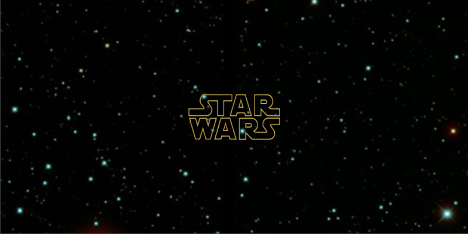
Word Crawl
Another Star Wars movie tradition, word crawl to infinity. This is done using a textured quad again, with the camera moving instead of the quad moving. I really just made up the storyline here.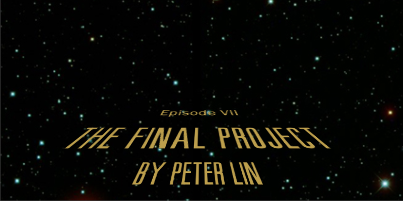
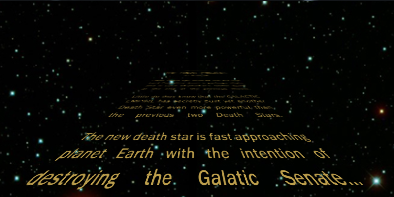
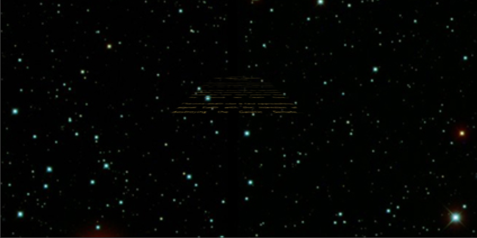
Landspeeder 1
Short animation with the landspeeder flying towards the planet Mars.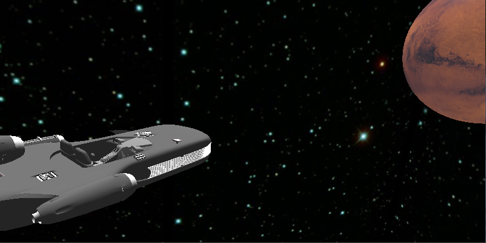
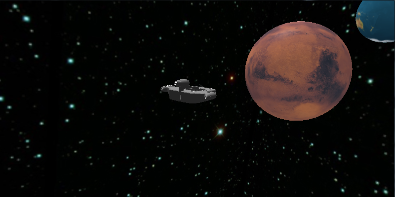
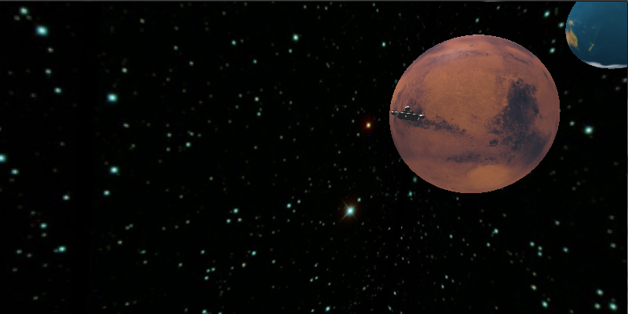
Landspeeder 2
Animation of landspeeder landing on Mars with planet Earth and the Moon in the distance.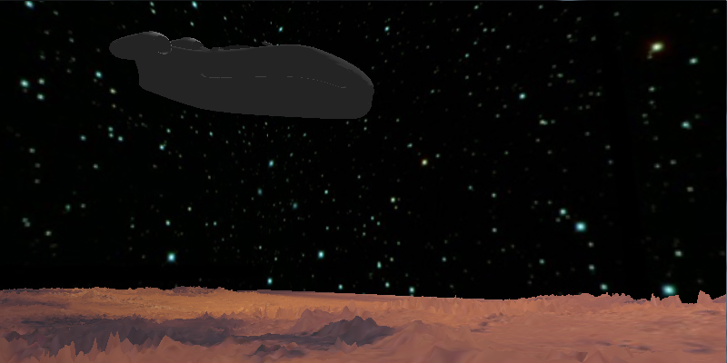
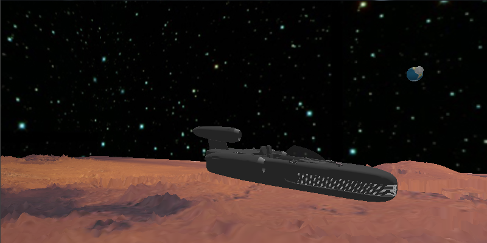
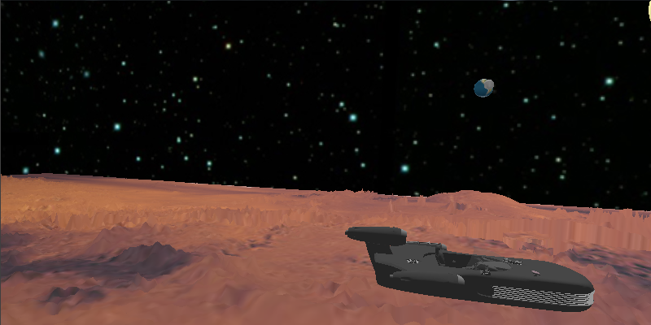
Enemy Unit animation
Enemy units are all animated when they come into the screen, and are animated when they die. When each stage starts, there is a short animation of the units as they come into the screen. The path the units follow in this animation is actually defined in each Unit object so it is easy to change the animation for each unit.When an enemy unit is defeated there is also a short animation of the dead unit falling into the terrain. It basically just slowly descends and eventually it'll no longer be visible.
Defeated enemy unit starts it's descent into the terrain...
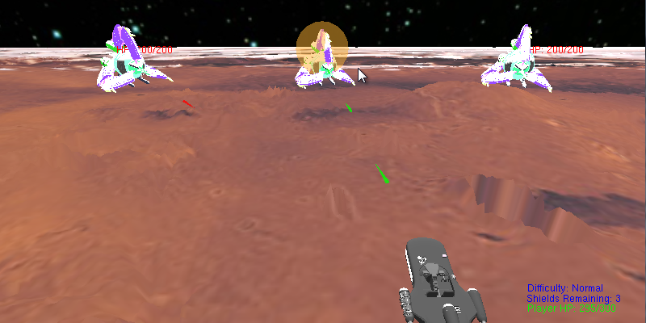
Defeated enemy unit descending into the terrain...
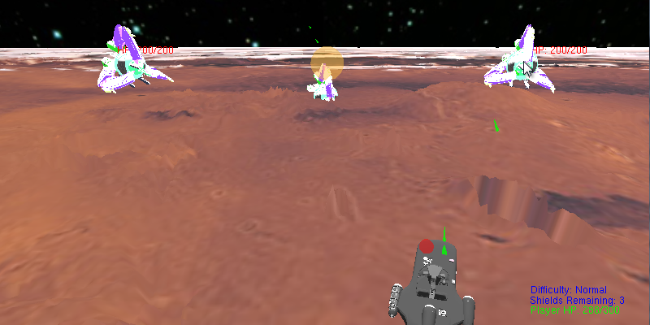
Animation Resources
Star Wars fonts were from http://www.theforce.net/fanfilms/postproduction/crawl/opening.aspStar Wars logo from http://www.viscombelfast.com/interactive/2010/10/star-wander/winnie-shek/